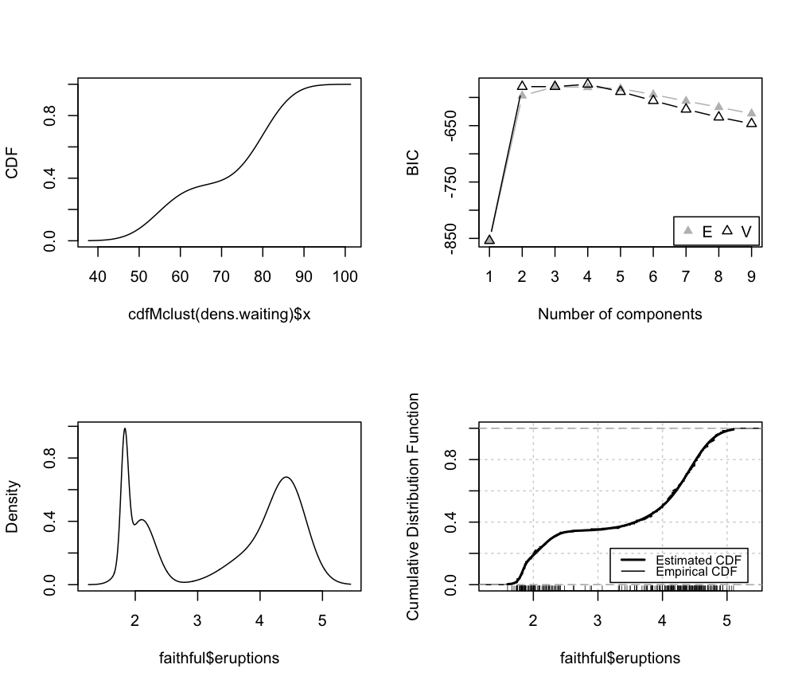
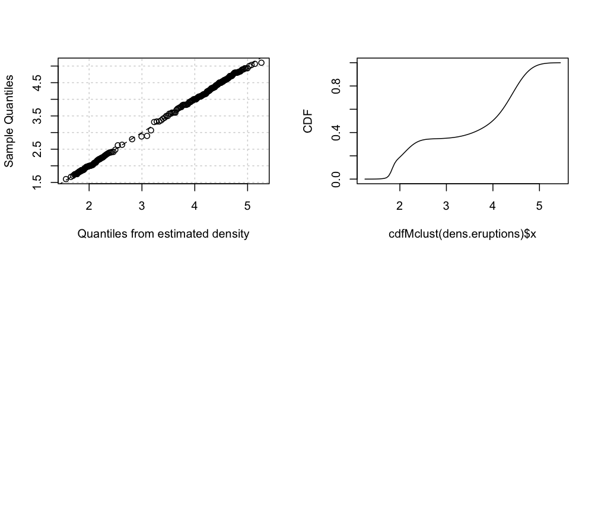

Cumulative Distribution and Quantiles for a univariate Gaussian mixture distribution
cdfMclust.RdCompute the cumulative density function (cdf) or quantiles from an estimated one-dimensional Gaussian mixture fitted using densityMclust.
cdfMclust(object, data, ngrid = 100, …) quantileMclust(object, p, ...)
Arguments
| object | a |
|---|---|
| data | a numeric vector of evaluation points. |
| ngrid | the number of points in a regular grid to be used as evaluation points if no |
| p | a numeric vector of probabilities. |
| … | further arguments passed to or from other methods. |
Details
The cdf is evaluated at points given by the optional argument data. If not provided, a regular grid of length ngrid for the evaluation points is used.
The quantiles are computed using interpolating splines on an adaptive finer grid.
Value
cdfMclust returns a list of x and y values providing, respectively, the evaluation points and the estimated cdf.
quantileMclust returns a vector of quantiles.
See also
Examples
#> ------------------------------------------------------- #> Density estimation via Gaussian finite mixture modeling #> ------------------------------------------------------- #> #> Mclust V (univariate, unequal variance) model with 2 components: #> #> log-likelihood n df BIC ICL #> -423.1536 200 5 -872.7988 -954.4126 #> #> Clustering table: #> 1 2 #> 100 100 #> #> Mixing probabilities: #> 1 2 #> 0.4436824 0.5563176 #> #> Means: #> 1 2 #> 0.03990539 2.79439735 #> #> Variances: #> 1 2 #> 1.005450 3.977212#> List of 2 #> $ x: num [1:100] -4.15 -4 -3.85 -3.7 -3.55 ... #> $ y: num [1:100] 0.000145 0.000196 0.000265 0.000359 0.000488 ...q <- quantileMclust(dens, p = c(0.01, 0.1, 0.5, 0.9, 0.99)) cbind(quantile = q, cdf = cdfMclust(dens, q)$y)#> quantile cdf #> [1,] -2.1541096 0.01 #> [2,] -0.8641117 0.10 #> [3,] 1.1608166 0.50 #> [4,] 4.6217949 0.90 #> [5,] 6.9774004 0.99plot(cdfMclust(dens.waiting), type = "l", xlab = dens.waiting$varname, ylab = "CDF") dens.eruptions <- densityMclust(faithful$eruptions) plot(dens.eruptions)plot(cdfMclust(dens.eruptions), type = "l", xlab = dens.eruptions$varname, ylab = "CDF") par(mfrow = c(1,1))